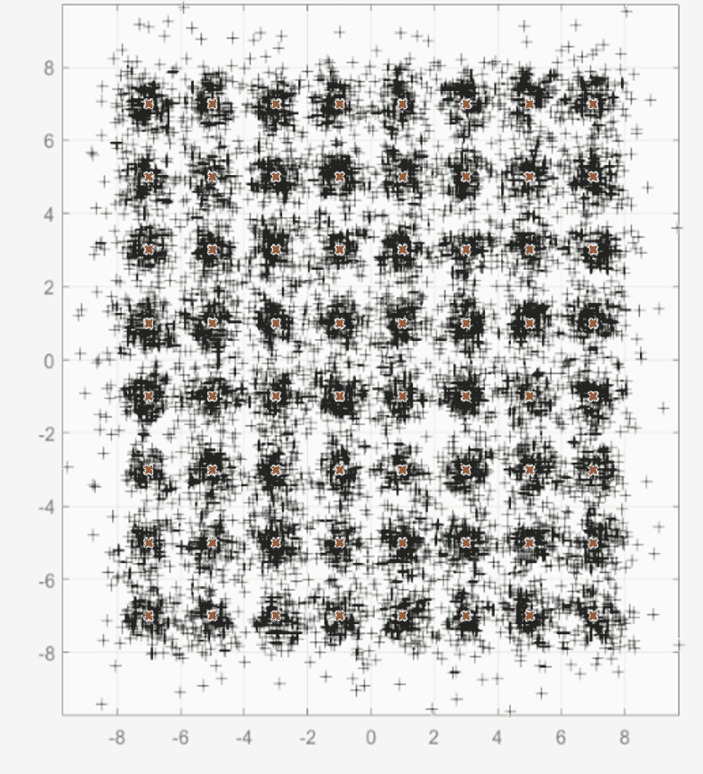
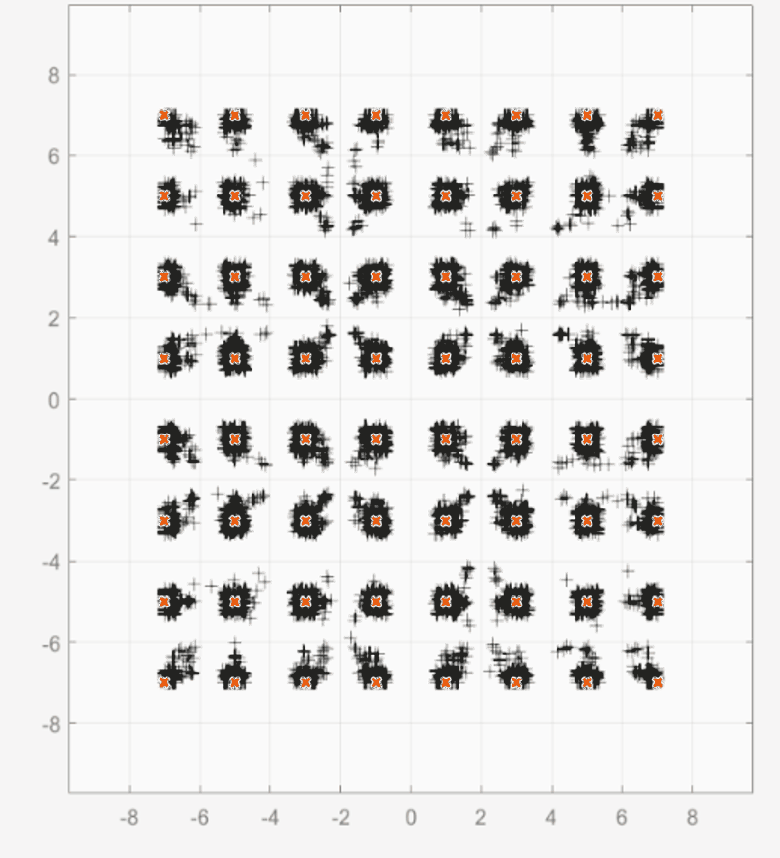
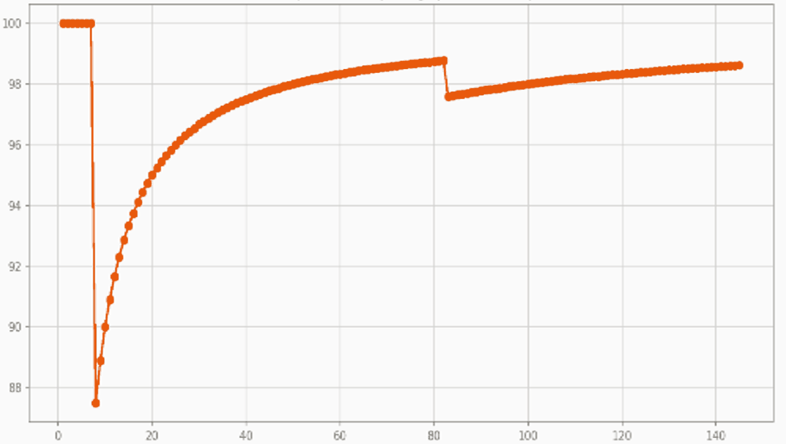

Connectivity and
perception silicon on
one architecture.
We design our own DSP. Both products are built from it, using one instruction set and one toolchain across generations.
00Overview
How the products fit together.
Everything on this page sits on one foundation. The DSP we design carries the compute unit; the compute unit carries the software platform; the platform carries both products. Each generation integrates more of the system onto the die without changing the layers above it. Select any band to jump to that section.
01Foundation · the DSP
We design our own DSP.
Most edge silicon licenses a signal-processing core and differentiates around it. Ours is our own design, which means the instruction set can be extended into the signal domains our customers work in, and the performance, power and cost curve is under our control rather than a supplier’s release schedule.
The data plane co-processor is our own architecture rather than a licensed core with surrounding logic.
Native instructions for the signal domains, added through the standard RISC-V extension mechanism.
Validated on FPGA, integrated with commercial L2/L3 stacks, demonstrated at MWC and IMC, and now in production silicon.
Our MIMO detection is proprietary and ships as firmware, so radio performance in a deployed fleet can be improved after installation.
Linear detector
Sub-optimal

Our detector
Near-optimal

Link performance
Cumulative throughput

Number of slots
The same received symbols after a sub-optimal linear detector and after our near-optimal detector, with the cumulative throughput measured over the same run. Saffron marks the 64 reference constellation points.
02Architecture · the compute unit
One instruction stream, one shared memory, one scheduler.
Signal processing and AI inference are pipelined on the same die under a single scheduler, without a mode switch or accelerator hand-off. The compute unit has three blocks; select one for detail.
Composed into one unit
Every execution unit is fed from the same memory under the same scheduler. Signal-processing results pass into inference without leaving the die and without a copy, which is the source of the bounded response time.
RISC-V scalar core
A RISC-V core sequences the unit: scalar work, control flow and issue into the data plane. The base is standard RISC-V, so standard compilers, debuggers and profilers apply without modification.
Data plane co-processor
The DSP we design. It executes real and complex signal math and low-precision inference on the same pipelines under one scheduler, which removes the mode switch and accelerator hand-off that introduce timing variance in conventional stacks.
Domain-specific instructions
Native instructions for the signal domains, added to the data plane co-processor through the standard RISC-V extension mechanism. Standard base with proprietary extensions covering 5G and 6G, camera, video, radar and LIDAR.
Scaling by composition.
The same verified unit composes into larger configurations, so one verification investment applies across the catalogue — from sensor-class devices to node-class systems.
One scalar core, one data plane, one set of domain instructions. Verified once.
Units over shared local memory, so workloads that exchange data stay on-die.
Clusters on a network-on-chip. The repeatable performance block.
Tiles with coherent interconnect and die-to-die links.
Chiplets with Ethernet, PCIe and DDR. Radio included only where required.
03Generations
Multiple generations on one architecture.
Each generation integrates more of the system onto the die. The underlying architecture does not change, so software written for the first generation runs on the third and a design-in made today carries forward.
Connectivity
5G small cell silicon. We supply the chip, the L1 software carrying our MIMO detection, and the complete femto system. v1 is in production and available to customers. A v2 revision is in progress, targeting further power reduction on the same product.
Connectivity and perception on one die
One silicon design serving two products: the femto part and the perception SoC. Same compute unit, same instruction set and same toolchain across both. Specifications and interface detail are in the product briefs.
Radio integrated on-die
Radio integration moves the last discrete component of the system onto the SoC. The two products remain connectivity and perception.
04Product · connectivity
Connectivity
In production5G small cells for operator networks and private industrial networks. In production now, at lower power and cost than incumbent multi-chip platforms, with radio performance delivered as firmware.
The chip. Deterministic 5G silicon, in production and available to customers.
The L1 software, carrying our proprietary MIMO detection as firmware.
The complete femto system, at a level an operator can accept and deploy.
| Function | 5G NR small-cell platform for operator networks, private 5G and industrial networks |
|---|---|
| Radio performance | Proprietary MIMO detection delivered as firmware; performance can be improved after deployment |
| Stack integration | Validated against commercial L2/L3 stacks |
| System power | More than 50% lower than incumbent multi-chip platforms, from architecture rather than process node |
| Status | In production, available to customers, designed and supported in-country |
| Lifecycle | 15-year industrial supply and support commitment |
| Roadmap | Committed integration path onto Gen 2; the software platform is unchanged across generations |
04Product · perception
Perception
Gen 2 · EVKs and sampling H2 2027A deterministic perception co-processor for smart cameras, mobile robots and industrial vision. It handles the perception pipeline in bounded time at camera-class cost and power, alongside the application processor rather than replacing it.
The chip. Perception and connectivity from the same silicon design and instruction set.
The compiler and toolchain, on a standard RISC-V base.
The software platform: runtime, pre-optimised model library and reference designs, tuned for latency, cost and power.
| Function | Perception pipeline and edge-AI inference on one die, ahead of the application processor |
|---|---|
| On-die | Sensor I/O · image-signal processing · safety island · perception inference |
| Functional safety | Safety island designed on an IEC 61508 / ISO 13849 certification path |
| Software | Ships with a pre-optimised model library, reducing time to first working inference |
| Optimisation target | Latency, cost and power together, which are the binding constraints in volume machine sockets |
| Architecture | Same instruction set, toolchain and firmware as the rest of the family |
| Availability | Evaluation kits and silicon sampling in OEM labs H2 2027 |
| Lifecycle | 15-year industrial supply and support commitment |
| Specifications | Full roadmap, specifications and interface detail are provided in the product brief |
05Platform
Four layers.
We build the compute unit, the software platform and the products. Applications are built by partners on top.
Maintenance, quality inspection, fleet orchestration and safety analytics, built by software vendors and integrators on our SDK. We do not build applications.
Connectivity and perception, and subsystems supplied into partner macro systems. From Gen 2 both products come from one silicon design.
SDK and toolchain, firmware and deterministic runtime with over-the-air update, pre-optimised model library, reference designs and certification kits. This reduces the engineering cost of each subsequent design-in.
RISC-V control plane, our DSP data plane and domain-specific instructions, verified once and composed into every product.
What ships with the silicon.
SDK and toolchain on a standard RISC-V base — compilers, debuggers and profilers.
Deterministic firmware and runtime with over-the-air update, so deployed systems can be improved in the field.
Pre-optimised model library, reference designs and certification kits.
06Product journey
Product journey: so far, and into the future.
Technology and product milestones only. Programme and commercial milestones are on the company history page.
✓ complete ● in progress ○ committed